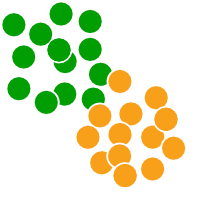

The Racmacs package provides a toolkit for making antigenic maps from assay data such as HI assays, as described in Smith et al. 2004.
For an introduction to antigenic cartography, see the article an introduction to antigenic cartography. For a general introduction to using Racmacs to make an antigenic map from titer data see the article making an antigenic map from titer data. For documentation of the functions available see the references section.
Installation instructions
Install the devtools package
If not already installed, install the devtools package, this provides functions to help with installation.
install.packages("devtools")Install Racmacs
Now you can install Racmacs directly from the latest development source code. In future pre-built binary versions will also be included.
# To build from github source
devtools::install_github("acorg/Racmacs")Problems compiling on MacOS
When installing Racmacs on a mac os, compilation will most likely fail under the default setup since the necessary libraries that are linked to cannot be found. The recommended solution, which should both solve this problem and speed up the code, is for mac users to follow the instructions below for setting up your environment to use the gcc compiler. In the future we will try to provide pre-built binary versions of Racmacs for the latest major operating systems and R versions to avoid the need to build the package locally.
Building Racmacs to run code in parallel
Racmacs uses OpenMP instructions to specify when code, for example map optimization runs, can be run in parallel to increase performance. The resulting speed-up can be significant, but you need to check whether the compiler you use supports OpenMP. The default compiler on mac systems for example is clang which does not support OpenMP and will compile Racmacs as a single-threaded program.
Luckily in these cases it is relatively easy to install an alternative compiler like gcc which does support OpenMP and will compile Racmacs as a multi-threaded program. To do this you need to first install gcc and then tell R that you would like to use the gcc compiler instead.
Installing gcc
The easiest way to install gcc is through homebrew. First download homebrew if you haven’t already then simply run:
brew install gccThis will then install the g++ compiler executable
Changing the default compiler in R
To change the default compiler in R, you can specify this in your local Makevars file. This exists in the .R folder in your home folder, i.e. ~/.R/Makevars. It is possible you will have to create the .R folder and the Makevars text file.
Once done, add the following lines to the Makevars file (note that as gcc versions are updated the version number, here 11, may change):
CXX=/usr/local/bin/g++-11
CXX1X=/usr/local/bin/g++-11
CXX11=/usr/local/bin/g++-11
SHLIB_CXXLD=/usr/local/bin/g++-11
FC=/usr/local/bin/gfortran-11
F77=/usr/local/bin/gfortran-11
MAKE=make -j8
SHLIB_OPENMP_CFLAGS=-fopenmp
SHLIB_OPENMP_CXXFLAGS=-fopenmp
SHLIB_OPENMP_FCFLAGS=-fopenmp
SHLIB_OPENMP_FFLAGS=-fopenmpNow when you try and install and build the package from source things should be setup to use g++, with support for OpenMP parallization now included.
Finally, to check whether your version of Racmacs has been compiled to work in parallel or not you can run the command Racmacs:::parallel_mode(), which should return TRUE. It’s not a problem if it returns FALSE, optimization code just won’t run in parallel so will take a bit longer.